from mlxtend.feature_selection import SequentialFeatureSelector
from pygam import LinearGAM, s, l
from scipy.stats import linregress
from sklearn.linear_model import Lasso, LassoLars, LassoCV, LassoLarsCV
from sklearn.linear_model import LinearRegression
from sklearn.metrics import mean_squared_error, r2_score
from sklearn.pipeline import Pipeline
from sklearn.preprocessing import StandardScaler
from statsmodels.gam.api import GLMGam, BSplines
from statsmodels.stats.outliers_influence import OLSInfluence
import matplotlib.pyplot as plt
import numpy as np
import pandas as pd
import random
import seaborn as sns
import statsmodels.api as sm
import statsmodels.formula.api as smf
random.seed(123)
# Location of the data files. Adjust this path if you keep the data
# files in a different directory.
from pathlib import Path
DATA_DIR = Path('../../data')Chapter 4: Regression and Prediction
- 2019-2026 Peter C. Bruce, Andrew Bruce, Peter Gedeck
Regression and Prediction
Simple Linear Regression
The Regression Equation
lung = pd.read_csv(DATA_DIR / "LungDisease.csv")
predictors = ["Exposure"]
outcome = "PEFR"
model = LinearRegression()
model.fit(lung[predictors], lung[outcome])
print(f"Intercept: {model.intercept_:.3f}")
print(f"Coefficient Exposure: {model.coef_[0]:.3f}")Intercept: 424.583
Coefficient Exposure: -4.185Fitted Values and Residuals
fitted = model.predict(lung[predictors])
residuals = lung[outcome] - fittedMultiple Linear Regression
Example: King County Housing Data
house = pd.read_csv(DATA_DIR / "house_sales.csv")
subset = ["AdjSalePrice", "SqFtTotLiving", "SqFtLot", "Bathrooms",
"Bedrooms", "BldgGrade"]
house[subset].head()| AdjSalePrice | SqFtTotLiving | SqFtLot | Bathrooms | Bedrooms | BldgGrade | |
|---|---|---|---|---|---|---|
| 0 | 300805.0 | 2400 | 9373 | 3.00 | 6 | 7 |
| 1 | 1076162.0 | 3764 | 20156 | 3.75 | 4 | 10 |
| 2 | 761805.0 | 2060 | 26036 | 1.75 | 4 | 8 |
| 3 | 442065.0 | 3200 | 8618 | 3.75 | 5 | 7 |
| 4 | 297065.0 | 1720 | 8620 | 1.75 | 4 | 7 |
predictors = ["SqFtTotLiving", "SqFtLot", "Bathrooms", "Bedrooms", "BldgGrade"]
outcome = "AdjSalePrice"
house_lm = LinearRegression()
house_lm.fit(house[predictors], house[outcome])LinearRegression()In a Jupyter environment, please rerun this cell to show the HTML representation or trust the notebook.
On GitHub, the HTML representation is unable to render, please try loading this page with nbviewer.org.
Parameters
print(f"Intercept: {house_lm.intercept_:.3f}")
print("Coefficients:")
for name, coef in zip(house_lm.feature_names_in_, house_lm.coef_, strict=True):
print(f" {name}: {coef}")Intercept: -521871.368
Coefficients:
SqFtTotLiving: 228.83060360240785
SqFtLot: -0.060466820653060145
Bathrooms: -19442.840398321074
Bedrooms: -47769.9551852142
BldgGrade: 106106.96307898112Assessing the Model
fitted = house_lm.predict(house[predictors])
RMSE = np.sqrt(mean_squared_error(house[outcome], fitted))
r2 = r2_score(house[outcome], fitted)
print(f"RMSE: {RMSE:.0f}")
print(f"r2: {r2:.4f}")RMSE: 261220
r2: 0.5406model = sm.OLS(house[outcome], sm.add_constant(house[predictors]))
results = model.fit()
results.summary()| Dep. Variable: | AdjSalePrice | R-squared: | 0.541 |
|---|---|---|---|
| Model: | OLS | Adj. R-squared: | 0.540 |
| Method: | Least Squares | F-statistic: | 5338. |
| Date: | Tue, 09 Jun 2026 | Prob (F-statistic): | 0.00 |
| Time: | 18:18:15 | Log-Likelihood: | -3.1517e+05 |
| No. Observations: | 22687 | AIC: | 6.304e+05 |
| Df Residuals: | 22681 | BIC: | 6.304e+05 |
| Df Model: | 5 | ||
| Covariance Type: | nonrobust |
| coef | std err | t | P>|t| | [0.025 | 0.975] | |
|---|---|---|---|---|---|---|
| const | -5.219e+05 | 1.57e+04 | -33.342 | 0.000 | -5.53e+05 | -4.91e+05 |
| SqFtTotLiving | 228.8306 | 3.899 | 58.694 | 0.000 | 221.189 | 236.472 |
| SqFtLot | -0.0605 | 0.061 | -0.988 | 0.323 | -0.180 | 0.059 |
| Bathrooms | -1.944e+04 | 3625.388 | -5.363 | 0.000 | -2.65e+04 | -1.23e+04 |
| Bedrooms | -4.777e+04 | 2489.732 | -19.187 | 0.000 | -5.27e+04 | -4.29e+04 |
| BldgGrade | 1.061e+05 | 2396.445 | 44.277 | 0.000 | 1.01e+05 | 1.11e+05 |
| Omnibus: | 29676.557 | Durbin-Watson: | 1.247 |
|---|---|---|---|
| Prob(Omnibus): | 0.000 | Jarque-Bera (JB): | 19390738.346 |
| Skew: | 6.889 | Prob(JB): | 0.00 |
| Kurtosis: | 145.559 | Cond. No. | 2.86e+05 |
Notes:
[1] Standard Errors assume that the covariance matrix of the errors is correctly specified.
[2] The condition number is large, 2.86e+05. This might indicate that there are
strong multicollinearity or other numerical problems.
Model Selection and Stepwise Regression
predictors = ["SqFtTotLiving", "SqFtLot", "Bathrooms", "Bedrooms", "BldgGrade",
"PropertyType", "NbrLivingUnits", "SqFtFinBasement", "YrBuilt",
"YrRenovated", "NewConstruction"]
X = pd.get_dummies(house[predictors], drop_first=True, dtype=int)
X["NewConstruction"] = [1 if nc else 0 for nc in X["NewConstruction"]]
house_full = sm.OLS(house[outcome], sm.add_constant(X))
results = house_full.fit()
results.summary()| Dep. Variable: | AdjSalePrice | R-squared: | 0.595 |
|---|---|---|---|
| Model: | OLS | Adj. R-squared: | 0.594 |
| Method: | Least Squares | F-statistic: | 2771. |
| Date: | Tue, 09 Jun 2026 | Prob (F-statistic): | 0.00 |
| Time: | 18:18:15 | Log-Likelihood: | -3.1375e+05 |
| No. Observations: | 22687 | AIC: | 6.275e+05 |
| Df Residuals: | 22674 | BIC: | 6.276e+05 |
| Df Model: | 12 | ||
| Covariance Type: | nonrobust |
| coef | std err | t | P>|t| | [0.025 | 0.975] | |
|---|---|---|---|---|---|---|
| const | 6.182e+06 | 1.55e+05 | 39.902 | 0.000 | 5.88e+06 | 6.49e+06 |
| SqFtTotLiving | 198.6364 | 4.234 | 46.920 | 0.000 | 190.338 | 206.934 |
| SqFtLot | 0.0771 | 0.058 | 1.330 | 0.184 | -0.037 | 0.191 |
| Bathrooms | 4.286e+04 | 3808.114 | 11.255 | 0.000 | 3.54e+04 | 5.03e+04 |
| Bedrooms | -5.187e+04 | 2396.904 | -21.638 | 0.000 | -5.66e+04 | -4.72e+04 |
| BldgGrade | 1.373e+05 | 2441.242 | 56.228 | 0.000 | 1.32e+05 | 1.42e+05 |
| NbrLivingUnits | 5723.8438 | 1.76e+04 | 0.326 | 0.744 | -2.87e+04 | 4.01e+04 |
| SqFtFinBasement | 7.0611 | 4.627 | 1.526 | 0.127 | -2.009 | 16.131 |
| YrBuilt | -3574.2210 | 77.228 | -46.282 | 0.000 | -3725.593 | -3422.849 |
| YrRenovated | -2.5311 | 3.924 | -0.645 | 0.519 | -10.222 | 5.160 |
| NewConstruction | -2489.1122 | 5936.692 | -0.419 | 0.675 | -1.41e+04 | 9147.211 |
| PropertyType_Single Family | 2.997e+04 | 2.61e+04 | 1.149 | 0.251 | -2.12e+04 | 8.11e+04 |
| PropertyType_Townhouse | 9.286e+04 | 2.7e+04 | 3.438 | 0.001 | 3.99e+04 | 1.46e+05 |
| Omnibus: | 31006.128 | Durbin-Watson: | 1.393 |
|---|---|---|---|
| Prob(Omnibus): | 0.000 | Jarque-Bera (JB): | 26251977.078 |
| Skew: | 7.427 | Prob(JB): | 0.00 |
| Kurtosis: | 168.984 | Cond. No. | 2.98e+06 |
Notes:
[1] Standard Errors assume that the covariance matrix of the errors is correctly specified.
[2] The condition number is large, 2.98e+06. This might indicate that there are
strong multicollinearity or other numerical problems.
sfs_stepwise = SequentialFeatureSelector(LinearRegression(),
k_features=(1, 11),
forward=True, floating=True,
cv=5, scoring="neg_root_mean_squared_error", n_jobs=-1)
sfs_stepwise.fit(X, house[outcome])
print(sfs_stepwise.k_feature_names_)('SqFtTotLiving', 'Bathrooms', 'Bedrooms', 'BldgGrade', 'YrBuilt', 'PropertyType_Single Family', 'PropertyType_Townhouse')step_lm = Pipeline([
("sfs", SequentialFeatureSelector(LinearRegression(),
k_features=(1, 12), forward=False, floating=True,
cv=5, scoring="neg_root_mean_squared_error", n_jobs=-1)),
("model", LinearRegression()),
])
step_lm.fit(X, house[outcome])/Users/petergedeck/cdd/practical-statistics-for-data-scientists-code-3e/.venv/lib/python3.13/site-packages/sklearn/externals/_numpydoc/docscrape.py:203: UserWarning: potentially wrong underline length...
Examples
----------- in
Sequential Feature Selection for Classification and Regression.
...
while not self._is_at_section() and not self._doc.eof():Pipeline(steps=[('sfs',
SequentialFeatureSelector(estimator=LinearRegression(),
floating=True, forward=False,
k_features=(1, 12), n_jobs=-1,
scoring='neg_root_mean_squared_error')),
('model', LinearRegression())])In a Jupyter environment, please rerun this cell to show the HTML representation or trust the notebook. On GitHub, the HTML representation is unable to render, please try loading this page with nbviewer.org.
Parameters
Parameters
| estimator | LinearRegression() | |
| k_features | (1, ...) | |
| forward | False | |
| floating | True | |
| verbose | 0 | |
| scoring | 'neg_root_mean_squared_error' | |
| cv | 5 | |
| n_jobs | -1 | |
| pre_dispatch | '2*n_jobs' | |
| clone_estimator | True | |
| fixed_features | None | |
| feature_groups | None |
LinearRegression()
Parameters
Parameters
Weighted Regression
house["Year"] = [int(date.split("-")[0]) for date in house.DocumentDate]
house["Weight"] = house.Year - 2005predictors = ["SqFtTotLiving", "SqFtLot", "Bathrooms", "Bedrooms", "BldgGrade"]
outcome = "AdjSalePrice"
house_wt = LinearRegression()
house_wt.fit(house[predictors], house[outcome], sample_weight=house.Weight)LinearRegression()In a Jupyter environment, please rerun this cell to show the HTML representation or trust the notebook.
On GitHub, the HTML representation is unable to render, please try loading this page with nbviewer.org.
Parameters
pd.concat([
pd.DataFrame({
"predictor": predictors,
"house_lm": house_lm.coef_,
"house_wt": house_wt.coef_,
}),
pd.DataFrame({
"predictor": ["intercept"],
"house_lm": house_lm.intercept_,
"house_wt": house_wt.intercept_,
}),
])| predictor | house_lm | house_wt | |
|---|---|---|---|
| 0 | SqFtTotLiving | 228.830604 | 245.024089 |
| 1 | SqFtLot | -0.060467 | -0.292415 |
| 2 | Bathrooms | -19442.840398 | -26085.970109 |
| 3 | Bedrooms | -47769.955185 | -53608.876436 |
| 4 | BldgGrade | 106106.963079 | 115242.434726 |
| 0 | intercept | -521871.368188 | -584189.329446 |
Factor Variables in Regression
Dummy Variables Representation
house.PropertyType.head()0 Multiplex
1 Single Family
2 Single Family
3 Single Family
4 Single Family
Name: PropertyType, dtype: strprint(pd.get_dummies(house["PropertyType"]).head())
print(pd.get_dummies(house["PropertyType"], drop_first=True).head()) Multiplex Single Family Townhouse
0 True False False
1 False True False
2 False True False
3 False True False
4 False True False
Single Family Townhouse
0 False False
1 True False
2 True False
3 True False
4 True Falsepredictors = ["SqFtTotLiving", "SqFtLot", "Bathrooms", "Bedrooms",
"BldgGrade", "PropertyType"]
X = pd.get_dummies(house[predictors], drop_first=True, dtype=int)
house_lm_factor = LinearRegression()
house_lm_factor.fit(X, house[outcome])
print(f"Intercept: {house_lm_factor.intercept_:.3f}")
print("Coefficients:")
for name, coef in zip(X.columns, house_lm_factor.coef_, strict=True):
print(f" {name}: {coef}")Intercept: -446841.366
Coefficients:
SqFtTotLiving: 223.37362892503833
SqFtLot: -0.07036798136811658
Bathrooms: -15979.013473415354
Bedrooms: -50889.73218483002
BldgGrade: 109416.30516146205
PropertyType_Single Family: -84678.21629549282
PropertyType_Townhouse: -115121.97921609184Factor Variables with Many Levels
pd.DataFrame(house["ZipCode"].value_counts()).transpose()| ZipCode | 98038 | 98103 | 98042 | 98115 | 98117 | 98052 | 98034 | 98033 | 98059 | 98074 | ... | 98051 | 98024 | 98354 | 98050 | 98057 | 98288 | 98224 | 98068 | 98113 | 98043 |
|---|---|---|---|---|---|---|---|---|---|---|---|---|---|---|---|---|---|---|---|---|---|
| count | 788 | 671 | 641 | 620 | 619 | 614 | 575 | 517 | 513 | 502 | ... | 32 | 31 | 9 | 7 | 4 | 4 | 3 | 1 | 1 | 1 |
1 rows × 80 columns
house = pd.read_csv(DATA_DIR / "house_sales.csv")
predictors = ["SqFtTotLiving", "SqFtLot", "Bathrooms", "Bedrooms", "BldgGrade"]
outcome = "AdjSalePrice"
house_lm = LinearRegression()
house_lm.fit(house[predictors], house[outcome])
zip_groups = pd.DataFrame([
*pd.DataFrame({
"ZipCode": house["ZipCode"],
"residual": house[outcome] - house_lm.predict(house[predictors]),
})
.groupby(["ZipCode"])[["ZipCode", "residual"]]
.apply(lambda x: {
"ZipCode": x.iloc[0, 0],
"count": len(x),
"median_residual": x.residual.median(),
}),
]).sort_values("median_residual")
zip_groups["cum_count"] = np.cumsum(zip_groups["count"])
zip_groups["ZipGroup"] = pd.qcut(zip_groups["cum_count"], 5, labels=False,
retbins=False)
to_join = zip_groups[["ZipCode", "ZipGroup"]].set_index("ZipCode")
house = house.join(to_join, on="ZipCode")
house["ZipGroup"] = house["ZipGroup"].astype("category")print(zip_groups.head())
print(zip_groups.ZipGroup.value_counts().sort_index()) ZipCode count median_residual cum_count ZipGroup
36 98057 4 -537321.644462 4 0
27 98043 1 -307661.343614 5 0
46 98092 289 -193569.183599 294 0
23 98038 788 -150066.477035 1082 0
31 98051 32 -142352.869593 1114 0
ZipGroup
0 16
1 16
2 16
3 16
4 16
Name: count, dtype: int64Interpreting the Regression Equation
Confounding Variables
predictors = ["SqFtTotLiving", "SqFtLot", "Bathrooms", "Bedrooms",
"BldgGrade", "PropertyType", "ZipGroup"]
outcome = "AdjSalePrice"
X = pd.get_dummies(house[predictors], drop_first=True, dtype=int)
confounding_lm = LinearRegression()
confounding_lm.fit(X, house[outcome])
print(f"Intercept: {confounding_lm.intercept_:.3f}")
print("Coefficients:")
for name, coef in zip(X.columns, confounding_lm.coef_, strict=True):
print(f" {name}: {coef}")Intercept: -666637.469
Coefficients:
SqFtTotLiving: 210.61266005580163
SqFtLot: 0.4549871385466008
Bathrooms: 5928.425640001413
Bedrooms: -41682.871840744534
BldgGrade: 98541.18352725999
PropertyType_Single Family: 19323.625287919574
PropertyType_Townhouse: -78198.72092762378
ZipGroup_1: 53317.17330659807
ZipGroup_2: 116251.5888356354
ZipGroup_3: 178360.53178793358
ZipGroup_4: 338408.6018565202Interactions and Main Effects
model = smf.ols(formula="AdjSalePrice ~ SqFtTotLiving*ZipGroup + SqFtLot + "
"Bathrooms + Bedrooms + BldgGrade + PropertyType", data=house)
results = model.fit()
results.summary()| Dep. Variable: | AdjSalePrice | R-squared: | 0.682 |
|---|---|---|---|
| Model: | OLS | Adj. R-squared: | 0.682 |
| Method: | Least Squares | F-statistic: | 3247. |
| Date: | Tue, 09 Jun 2026 | Prob (F-statistic): | 0.00 |
| Time: | 18:18:23 | Log-Likelihood: | -3.1098e+05 |
| No. Observations: | 22687 | AIC: | 6.220e+05 |
| Df Residuals: | 22671 | BIC: | 6.221e+05 |
| Df Model: | 15 | ||
| Covariance Type: | nonrobust |
| coef | std err | t | P>|t| | [0.025 | 0.975] | |
|---|---|---|---|---|---|---|
| Intercept | -4.853e+05 | 2.05e+04 | -23.701 | 0.000 | -5.25e+05 | -4.45e+05 |
| ZipGroup[T.1] | -1.113e+04 | 1.34e+04 | -0.830 | 0.407 | -3.74e+04 | 1.52e+04 |
| ZipGroup[T.2] | 2.032e+04 | 1.18e+04 | 1.717 | 0.086 | -2877.441 | 4.35e+04 |
| ZipGroup[T.3] | 2.05e+04 | 1.21e+04 | 1.697 | 0.090 | -3180.870 | 4.42e+04 |
| ZipGroup[T.4] | -1.499e+05 | 1.13e+04 | -13.285 | 0.000 | -1.72e+05 | -1.28e+05 |
| PropertyType[T.Single Family] | 1.357e+04 | 1.39e+04 | 0.975 | 0.330 | -1.37e+04 | 4.09e+04 |
| PropertyType[T.Townhouse] | -5.884e+04 | 1.51e+04 | -3.888 | 0.000 | -8.85e+04 | -2.92e+04 |
| SqFtTotLiving | 114.7650 | 4.863 | 23.600 | 0.000 | 105.233 | 124.297 |
| SqFtTotLiving:ZipGroup[T.1] | 32.6043 | 5.712 | 5.708 | 0.000 | 21.409 | 43.799 |
| SqFtTotLiving:ZipGroup[T.2] | 41.7822 | 5.187 | 8.056 | 0.000 | 31.616 | 51.948 |
| SqFtTotLiving:ZipGroup[T.3] | 69.3415 | 5.619 | 12.341 | 0.000 | 58.329 | 80.354 |
| SqFtTotLiving:ZipGroup[T.4] | 226.6836 | 4.820 | 47.032 | 0.000 | 217.237 | 236.131 |
| SqFtLot | 0.6869 | 0.052 | 13.296 | 0.000 | 0.586 | 0.788 |
| Bathrooms | -3619.4533 | 3202.296 | -1.130 | 0.258 | -9896.174 | 2657.267 |
| Bedrooms | -4.18e+04 | 2120.279 | -19.715 | 0.000 | -4.6e+04 | -3.76e+04 |
| BldgGrade | 1.047e+05 | 2069.472 | 50.592 | 0.000 | 1.01e+05 | 1.09e+05 |
| Omnibus: | 30927.394 | Durbin-Watson: | 1.581 |
|---|---|---|---|
| Prob(Omnibus): | 0.000 | Jarque-Bera (JB): | 34361794.502 |
| Skew: | 7.279 | Prob(JB): | 0.00 |
| Kurtosis: | 193.101 | Cond. No. | 5.80e+05 |
Notes:
[1] Standard Errors assume that the covariance matrix of the errors is correctly specified.
[2] The condition number is large, 5.8e+05. This might indicate that there are
strong multicollinearity or other numerical problems.
Regression Diagnostics
Outliers
house_98105 = house.loc[house["ZipCode"] == 98105, ]
predictors = ["SqFtTotLiving", "SqFtLot", "Bathrooms", "Bedrooms", "BldgGrade"]
outcome = "AdjSalePrice"
house_outlier = sm.OLS(house_98105[outcome],
sm.add_constant(house_98105[predictors]))
result_98105 = house_outlier.fit()influence = OLSInfluence(result_98105)
sresiduals = influence.resid_studentized_internal
sresiduals.idxmin(), sresiduals.min()(np.int64(20428), np.float64(-4.326731804078573))outlier = house_98105.loc[sresiduals.idxmin(), :]
print("AdjSalePrice", outlier[outcome])
print(outlier[predictors])AdjSalePrice 119748.0
SqFtTotLiving 2900
SqFtLot 7276
Bathrooms 3.0
Bedrooms 6
BldgGrade 7
Name: 20428, dtype: objectInfluential Values
influence = OLSInfluence(result_98105)
fig, ax = plt.subplots(figsize=(5, 5))
ax.axhline(-2.5, linestyle="--", color="C1")
ax.axhline(2.5, linestyle="--", color="C1")
ax.scatter(influence.hat_matrix_diag, influence.resid_studentized_internal,
s=1000 * np.sqrt(influence.cooks_distance[0]),
alpha=0.5)
ax.set_xlabel("hat values")
ax.set_ylabel("studentized residuals")
plt.tight_layout()
plt.show()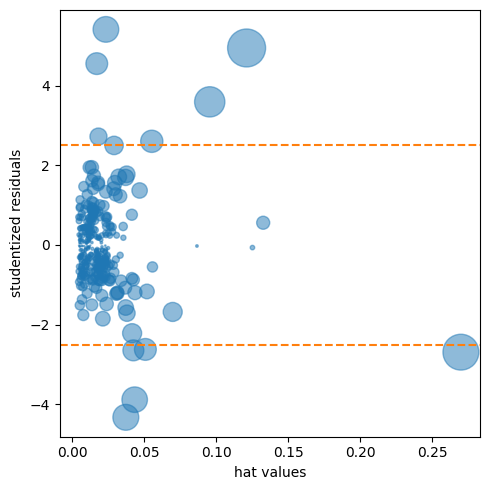
mask = [dist < 0.08 for dist in influence.cooks_distance[0]]
house_infl = house_98105.loc[mask]
ols_infl = sm.OLS(house_infl[outcome], sm.add_constant(house_infl[predictors]))
result_infl = ols_infl.fit()
pd.DataFrame({
"Original": result_98105.params,
"Influential removed": result_infl.params,
})| Original | Influential removed | |
|---|---|---|
| const | -772549.862447 | -647137.096716 |
| SqFtTotLiving | 209.602346 | 230.052569 |
| SqFtLot | 38.933315 | 33.141600 |
| Bathrooms | 2282.264145 | -16131.879785 |
| Bedrooms | -26320.268796 | -22887.865318 |
| BldgGrade | 130000.099737 | 114870.559737 |
Partial Residual Plots and Nonlinearity
sm.graphics.plot_ccpr(result_98105, "SqFtTotLiving")
plt.tight_layout()
plt.show()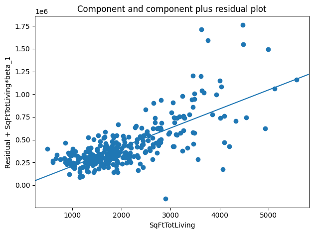
Polynomial and Spline Regression
Polynomial
model_poly = smf.ols(formula="AdjSalePrice ~ SqFtTotLiving + "
"I(SqFtTotLiving**2) + "
"SqFtLot + Bathrooms + Bedrooms + BldgGrade", data=house_98105)
result_poly = model_poly.fit()
result_poly.summary()| Dep. Variable: | AdjSalePrice | R-squared: | 0.806 |
|---|---|---|---|
| Model: | OLS | Adj. R-squared: | 0.802 |
| Method: | Least Squares | F-statistic: | 211.6 |
| Date: | Tue, 09 Jun 2026 | Prob (F-statistic): | 9.95e-106 |
| Time: | 18:18:24 | Log-Likelihood: | -4217.9 |
| No. Observations: | 313 | AIC: | 8450. |
| Df Residuals: | 306 | BIC: | 8476. |
| Df Model: | 6 | ||
| Covariance Type: | nonrobust |
| coef | std err | t | P>|t| | [0.025 | 0.975] | |
|---|---|---|---|---|---|---|
| Intercept | -6.159e+05 | 1.03e+05 | -5.953 | 0.000 | -8.19e+05 | -4.12e+05 |
| SqFtTotLiving | 7.4521 | 55.418 | 0.134 | 0.893 | -101.597 | 116.501 |
| I(SqFtTotLiving ** 2) | 0.0388 | 0.010 | 4.040 | 0.000 | 0.020 | 0.058 |
| SqFtLot | 32.5594 | 5.436 | 5.990 | 0.000 | 21.863 | 43.256 |
| Bathrooms | -1435.1231 | 1.95e+04 | -0.074 | 0.941 | -3.99e+04 | 3.7e+04 |
| Bedrooms | -9191.9441 | 1.33e+04 | -0.693 | 0.489 | -3.53e+04 | 1.69e+04 |
| BldgGrade | 1.357e+05 | 1.49e+04 | 9.087 | 0.000 | 1.06e+05 | 1.65e+05 |
| Omnibus: | 75.161 | Durbin-Watson: | 1.625 |
|---|---|---|---|
| Prob(Omnibus): | 0.000 | Jarque-Bera (JB): | 637.978 |
| Skew: | 0.699 | Prob(JB): | 2.92e-139 |
| Kurtosis: | 9.853 | Cond. No. | 7.37e+07 |
Notes:
[1] Standard Errors assume that the covariance matrix of the errors is correctly specified.
[2] The condition number is large, 7.37e+07. This might indicate that there are
strong multicollinearity or other numerical problems.
Splines
formula = ("AdjSalePrice ~ bs(SqFtTotLiving, df=6, degree=3) + "
"SqFtLot + Bathrooms + Bedrooms + BldgGrade")
model_spline = smf.ols(formula=formula, data=house_98105)
result_spline = model_spline.fit()Generalized Additive Models
predictors = ["SqFtTotLiving", "SqFtLot", "Bathrooms", "Bedrooms", "BldgGrade"]
outcome = "AdjSalePrice"
X = house_98105[predictors].to_numpy()
y = house_98105[outcome]
gam = LinearGAM(s(0, n_splines=12) + l(1) + l(2) + l(3) + l(4))
gam.gridsearch(X, y)
print(gam.summary())0% (0 of 11) | | Elapsed Time: 0:00:00 ETA: --:--:-- 100% (11 of 11) |########################| Elapsed Time: 0:00:00 Time: 0:00:00
LinearGAM
=============================================== ==========================================================
Distribution: NormalDist Effective DoF: 7.6772
Link Function: IdentityLink Log Likelihood: -4213.0332
Number of Samples: 313 AIC: 8443.4209
AICc: 8443.9746
GCV: 30838885095.1688
Scale: 171698.5198
Pseudo R-Squared: 0.8117
==========================================================================================================
Feature Function Lambda Rank EDoF P > x Sig. Code
================================= ==================== ============ ============ ============ ============
s(0) [15.8489] 12 4.3 0.00e+00 ***
l(1) [15.8489] 1 0.9 2.35e-10 ***
l(2) [15.8489] 1 0.8 8.45e-01
l(3) [15.8489] 1 0.9 3.79e-01
l(4) [15.8489] 1 0.8 0.00e+00 ***
intercept 1 0.0 9.14e-01
==========================================================================================================
Significance codes: 0 '***' 0.001 '**' 0.01 '*' 0.05 '.' 0.1 ' ' 1
WARNING: Fitting splines and a linear function to a feature introduces a model identifiability problem
which can cause p-values to appear significant when they are not.
WARNING: p-values calculated in this manner behave correctly for un-penalized models or models with
known smoothing parameters, but when smoothing parameters have been estimated, the p-values
are typically lower than they should be, meaning that the tests reject the null too readily.
None/var/folders/_8/ms0ft4913k3290v7f0g_yfpc0000gn/T/ipykernel_27334/4156786098.py:8: UserWarning: KNOWN BUG: p-values computed in this summary are likely much smaller than they should be.
Please do not make inferences based on these values!
Collaborate on a solution, and stay up to date at:
github.com/dswah/pyGAM/issues/163
print(gam.summary())Supplementary Material
Figure 4-1. Cotton exposure versus lung capacity
lung = pd.read_csv(DATA_DIR / "LungDisease.csv")
lung.plot.scatter(x="Exposure", y="PEFR")
plt.tight_layout()
plt.show()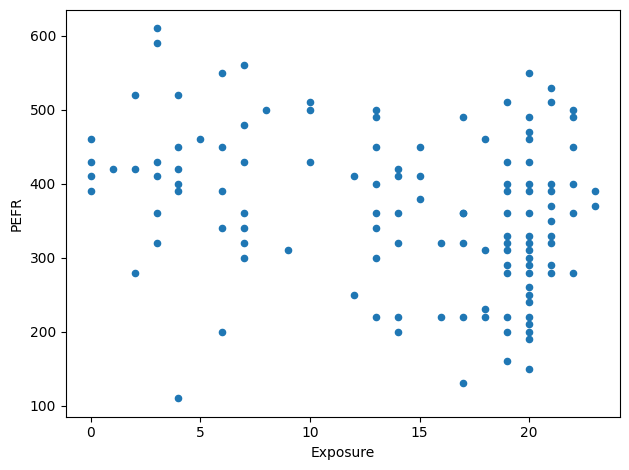
Figure 4-2. Slope and intercept for the regression fit to the lung data
predictors = ["Exposure"]
outcome = "PEFR"
model = LinearRegression()
model.fit(lung[predictors], lung[outcome])
fig, ax = plt.subplots(figsize=(4, 4))
ax.set_xlim(0, 23)
ax.set_ylim(295, 450)
ax.set_xlabel("Exposure")
ax.set_ylabel("PEFR")
ax.plot((0, 23), model.predict(pd.DataFrame({"Exposure": [0, 23]})))
ax.text(0.4, model.intercept_, r"$b_0$", size="larger")
x = pd.DataFrame({"Exposure": [7.5, 17.5]})
y = model.predict(x)
ax.plot((7.5, 7.5, 17.5), (y[0], y[1], y[1]), "--")
ax.text(5, np.mean(y), r"$\Delta Y$", size="larger")
ax.text(12, y[1] - 10, r"$\Delta X$", size="larger")
ax.text(12, 390, r"$b_1 = \frac{\Delta Y}{\Delta X}$", size="larger")
plt.tight_layout()
plt.show()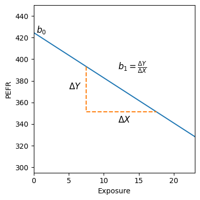
Figure 4-3. Residuals for the regression fit to the lung data
fitted = model.predict(lung[predictors])
residuals = lung[outcome] - fitted
ax = lung.plot.scatter(x="Exposure", y="PEFR", figsize=(4, 4), zorder=10)
ax.plot(lung.Exposure, fitted)
for x, yactual, yfitted in zip(lung.Exposure, lung.PEFR, fitted, strict=True):
ax.plot((x, x), (yactual, yfitted), "--", color="C1")
plt.tight_layout()
plt.show()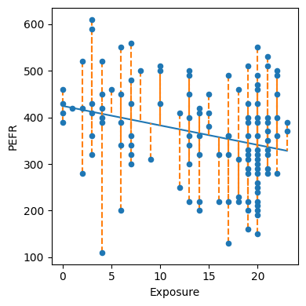
Figure 4-5. An example of an influential data point in regression
rng = np.random.default_rng(seed=5)
x = rng.normal(size=25)
y = -x / 5 + rng.normal(size=25)
x[0] = 8
y[0] = 8
def abline(slope, intercept, ax):
"""Calculate coordinates of a line based on slope and intercept"""
x_vals = np.array(ax.get_xlim())
return (x_vals, intercept + slope * x_vals)
fig, ax = plt.subplots(figsize=(4, 4))
ax.scatter(x, y)
slope, intercept, _, _, _ = linregress(x, y)
ax.plot(*abline(slope, intercept, ax))
slope, intercept, _, _, _ = linregress(x[1:], y[1:])
ax.plot(*abline(slope, intercept, ax), "--")
ax.set_xlim(-2.5, 8.5)
ax.set_ylim(-2.5, 8.5)
plt.tight_layout()
plt.show()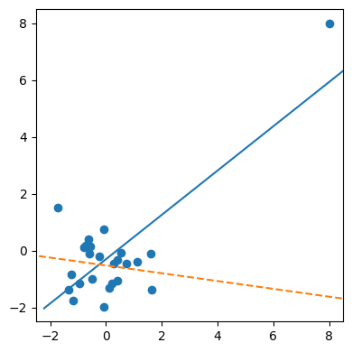
Figure 4-8. A histogram of the residuals from the regression of the housing data
fig, ax = plt.subplots(figsize=(4, 4))
pd.Series(influence.resid_studentized_internal).hist(ax=ax)
ax.set_xlabel("std. residual")
ax.set_ylabel("Frequency")
plt.tight_layout()
plt.show()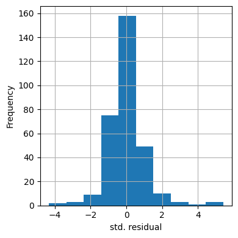
Figure 4-10. A polynomial regression fit for the variable SqFtTotLiving
(solid line) versus a smooth (dashed line; see the following section about splines)
def partial_residual_plot(model, df, outcome, feature, ax):
y_pred = model.predict(df)
# determine columns required for model
required = set(model.params.index).intersection(df.columns)
required.add(feature)
# create a copy of df with only required columns and set everything
# except the features to zero
copy_df = df[list(required)].copy().astype("float")
for c in copy_df.columns:
if c == feature:
continue
copy_df.loc[:, c] = 0.0
feature_prediction = model.predict(copy_df)
results = pd.DataFrame({
"feature": df[feature],
"residual": df[outcome] - y_pred,
"ypartial": feature_prediction - model.params.iloc[0],
})
results = results.sort_values(by=["feature"])
smoothed = sm.nonparametric.lowess(results.ypartial + results.residual, results.feature,
frac=1 / 3)
ax.scatter(results.feature, results.ypartial + results.residual)
ax.plot(smoothed[:, 0], smoothed[:, 1], color="gray")
ax.plot(results.feature, results.ypartial, color="black")
ax.set_xlabel(feature)
ax.set_ylabel(f"Residual + {feature} contribution")
return ax
fig, ax = plt.subplots(figsize=(5, 5))
partial_residual_plot(result_poly, house_98105, "AdjSalePrice", "SqFtTotLiving", ax)
plt.tight_layout()
plt.show()
print(result_poly.params.iloc[2])0.03879128168239703Figure 4-12. A spline regression fit for the variable SqFtTotLiving (solid line) compared to a smooth (dashed line)
fig, ax = plt.subplots(figsize=(5, 5))
partial_residual_plot(result_spline, house_98105, "AdjSalePrice", "SqFtTotLiving", ax)
plt.tight_layout()
plt.show()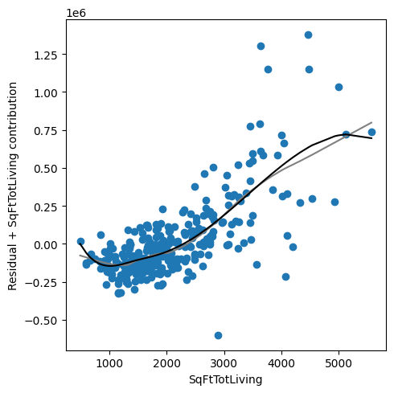
Figure 4-13. A GAM regression fit for the variable SqFtTotLiving (solid line) compared to a smooth (dashed line)
fig, axes = plt.subplots(figsize=(8, 8), ncols=2, nrows=3)
titles = ["SqFtTotLiving", "SqFtLot", "Bathrooms", "Bedrooms", "BldgGrade"]
for i, title in enumerate(titles):
ax = axes[i // 2, i % 2]
XX = gam.generate_X_grid(term=i)
ax.plot(XX[:, i], gam.partial_dependence(term=i, X=XX))
ax.plot(XX[:, i], gam.partial_dependence(term=i, X=XX, width=.95)[1], c="r", ls="--")
ax.set_title(title)
axes[2][1].set_visible(False)
plt.tight_layout()
plt.show()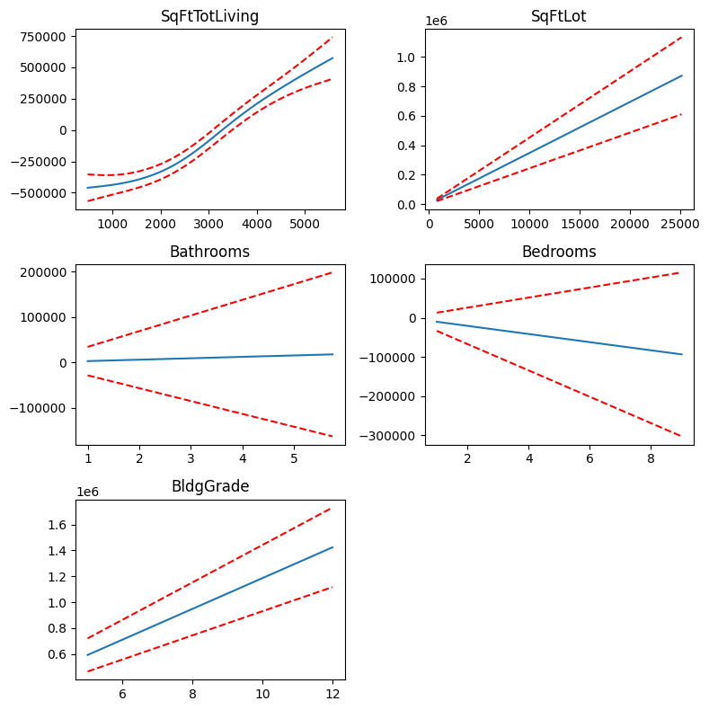
Generalized additive models using statsmodels
predictors = ["SqFtTotLiving", "SqFtLot", "Bathrooms", "Bedrooms", "BldgGrade"]
outcome = "AdjSalePrice"
x_spline = house_98105[predictors]
bs = BSplines(x_spline, df=[10] + [3] * 4, degree=[3] + [2] * 4)
# penalization weight
alpha = np.array([0] * 5)
formula = ("AdjSalePrice ~ SqFtTotLiving + "
"SqFtLot + Bathrooms + Bedrooms + BldgGrade")
gam_sm = GLMGam.from_formula(formula, data=house_98105, smoother=bs, alpha=alpha)
res_sm = gam_sm.fit()
print(res_sm.summary()) Generalized Linear Model Regression Results
==============================================================================
Dep. Variable: AdjSalePrice No. Observations: 313
Model: GLMGam Df Residuals: 295.00
Model Family: Gaussian Df Model: 17.00
Link Function: Identity Scale: 2.7471e+10
Method: PIRLS Log-Likelihood: -4196.6
Date: Tue, 09 Jun 2026 Deviance: 8.1039e+12
Time: 18:18:24 Pearson chi2: 8.10e+12
No. Iterations: 3 Pseudo R-squ. (CS): 0.9901
Covariance Type: nonrobust
====================================================================================
coef std err z P>|z| [0.025 0.975]
------------------------------------------------------------------------------------
Intercept -3.481e+05 1.18e+05 -2.962 0.003 -5.79e+05 -1.18e+05
SqFtTotLiving 192.1472 50.663 3.793 0.000 92.849 291.446
SqFtLot 6.9002 7.654 0.902 0.367 -8.101 21.902
Bathrooms -7836.2808 2.12e+04 -0.370 0.712 -4.94e+04 3.37e+04
Bedrooms -8297.4370 1.26e+04 -0.660 0.509 -3.29e+04 1.63e+04
BldgGrade 1.014e+05 1.4e+04 7.249 0.000 7.4e+04 1.29e+05
SqFtTotLiving_s0 1.465e+05 2.34e+05 0.626 0.531 -3.12e+05 6.05e+05
SqFtTotLiving_s1 -6.174e+04 1.33e+05 -0.464 0.642 -3.22e+05 1.99e+05
SqFtTotLiving_s2 -3.186e+04 1.26e+05 -0.253 0.800 -2.78e+05 2.15e+05
SqFtTotLiving_s3 -5.403e+04 1.01e+05 -0.535 0.593 -2.52e+05 1.44e+05
SqFtTotLiving_s4 -1.182e+05 1.01e+05 -1.167 0.243 -3.17e+05 8.03e+04
SqFtTotLiving_s5 -1.295e+05 8.23e+04 -1.574 0.115 -2.91e+05 3.17e+04
SqFtTotLiving_s6 -3.014e+04 1.27e+05 -0.237 0.813 -2.8e+05 2.2e+05
SqFtTotLiving_s7 1.262e+05 1.8e+05 0.702 0.483 -2.26e+05 4.79e+05
SqFtTotLiving_s8 5.325e+04 1.38e+05 0.386 0.700 -2.17e+05 3.24e+05
SqFtLot_s0 5.775e+05 1.58e+05 3.651 0.000 2.68e+05 8.88e+05
SqFtLot_s1 -2.771e+05 7.86e+04 -3.526 0.000 -4.31e+05 -1.23e+05
Bathrooms_s0 3.723e+04 1.06e+05 0.351 0.726 -1.71e+05 2.45e+05
Bathrooms_s1 5.303e+04 5.94e+04 0.892 0.372 -6.35e+04 1.7e+05
Bedrooms_s0 2.298e+05 1.31e+05 1.751 0.080 -2.74e+04 4.87e+05
Bedrooms_s1 -7.241e+04 6.81e+04 -1.063 0.288 -2.06e+05 6.11e+04
BldgGrade_s0 -7.953e+05 2.03e+05 -3.917 0.000 -1.19e+06 -3.97e+05
BldgGrade_s1 6.608e+05 1.14e+05 5.818 0.000 4.38e+05 8.83e+05
====================================================================================res_sm.plot_partial(0, cpr=True)
plt.tight_layout()
plt.show()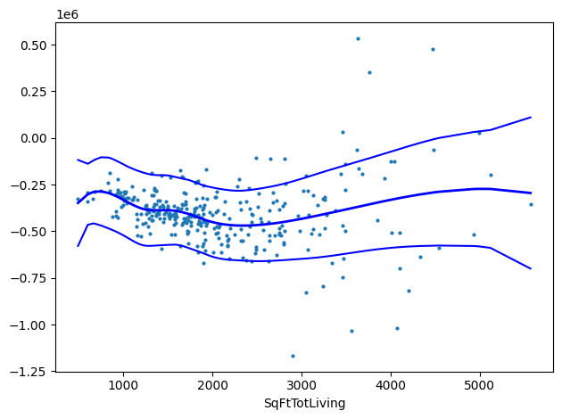
Additional material not covered in book
Regularization - Lasso
predictors = ["SqFtTotLiving", "SqFtLot", "Bathrooms", "Bedrooms",
"BldgGrade", "PropertyType", "NbrLivingUnits",
"SqFtFinBasement", "YrBuilt", "YrRenovated",
"NewConstruction"]
outcome = "AdjSalePrice"
X = pd.get_dummies(house[predictors], drop_first=True)
X["NewConstruction"] = [1 if nc else 0 for nc in X["NewConstruction"]]
columns = X.columns
X = StandardScaler().fit_transform(X)
y = house[outcome]
house_lm = LinearRegression()
print(house_lm.fit(X, y))LinearRegression()house_lasso = Lasso(alpha=10)
print(house_lasso.fit(X, y))Lasso(alpha=10)Method = LassoLars
MethodCV = LassoLarsCV
Method = Lasso
MethodCV = LassoCV
alpha_values = []
results = []
for alpha in [0.001, 0.01, 0.1, 1, 10, 100, 1000, 10000, 100000, 1000000, 10000000]:
model = Method(alpha=alpha)
model.fit(X, y)
alpha_values.append(alpha)
results.append(model.coef_)
modelCV = MethodCV(cv=5)
modelCV.fit(X, y)
ax = pd.DataFrame(results, index=alpha_values, columns=columns).plot(logx=True, legend=False)
ax.axvline(modelCV.alpha_)
plt.show()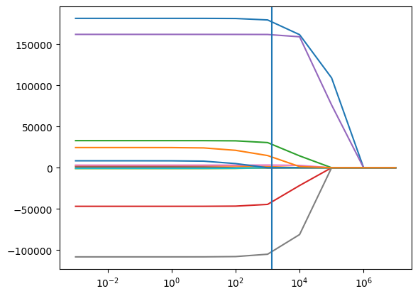
# Note that some of the coefficients are shrunk to zero
pd.DataFrame({
"name": columns,
"coef": modelCV.coef_,
})| name | coef | |
|---|---|---|
| 0 | SqFtTotLiving | 178995.820585 |
| 1 | SqFtLot | 1110.585770 |
| 2 | Bathrooms | 29843.352268 |
| 3 | Bedrooms | -43790.256319 |
| 4 | BldgGrade | 161882.297251 |
| 5 | NbrLivingUnits | -0.000000 |
| 6 | SqFtFinBasement | 3248.457098 |
| 7 | YrBuilt | -104164.720862 |
| 8 | YrRenovated | 0.000000 |
| 9 | NewConstruction | -0.000000 |
| 10 | PropertyType_Single Family | -0.000000 |
| 11 | PropertyType_Townhouse | 14255.932699 |